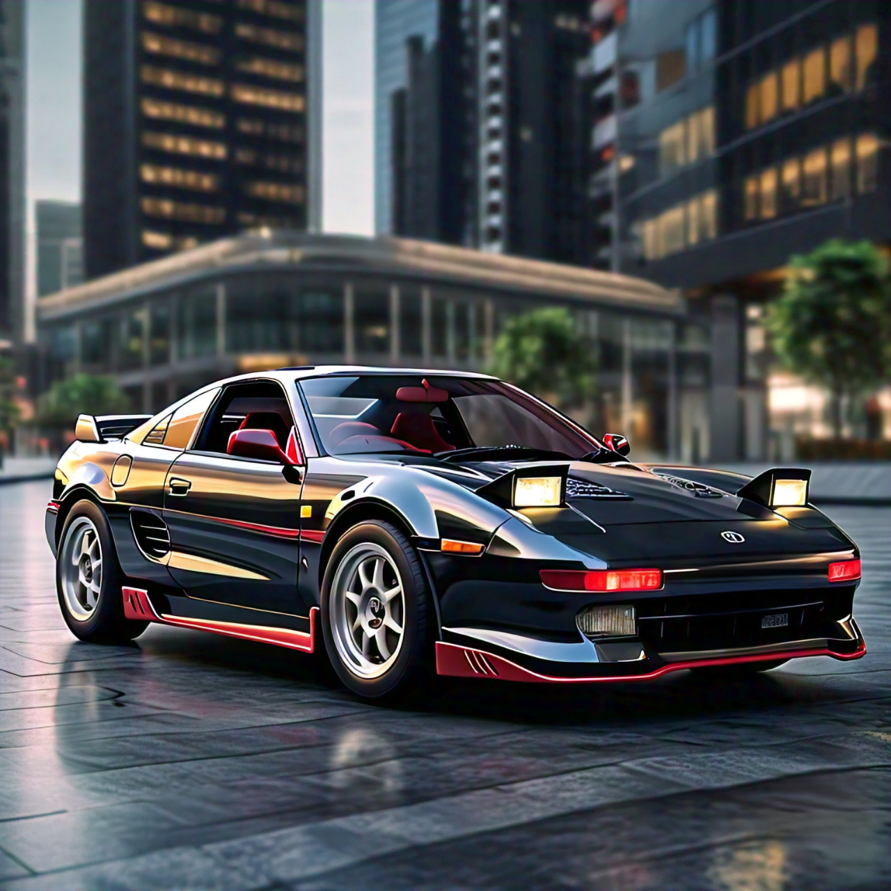
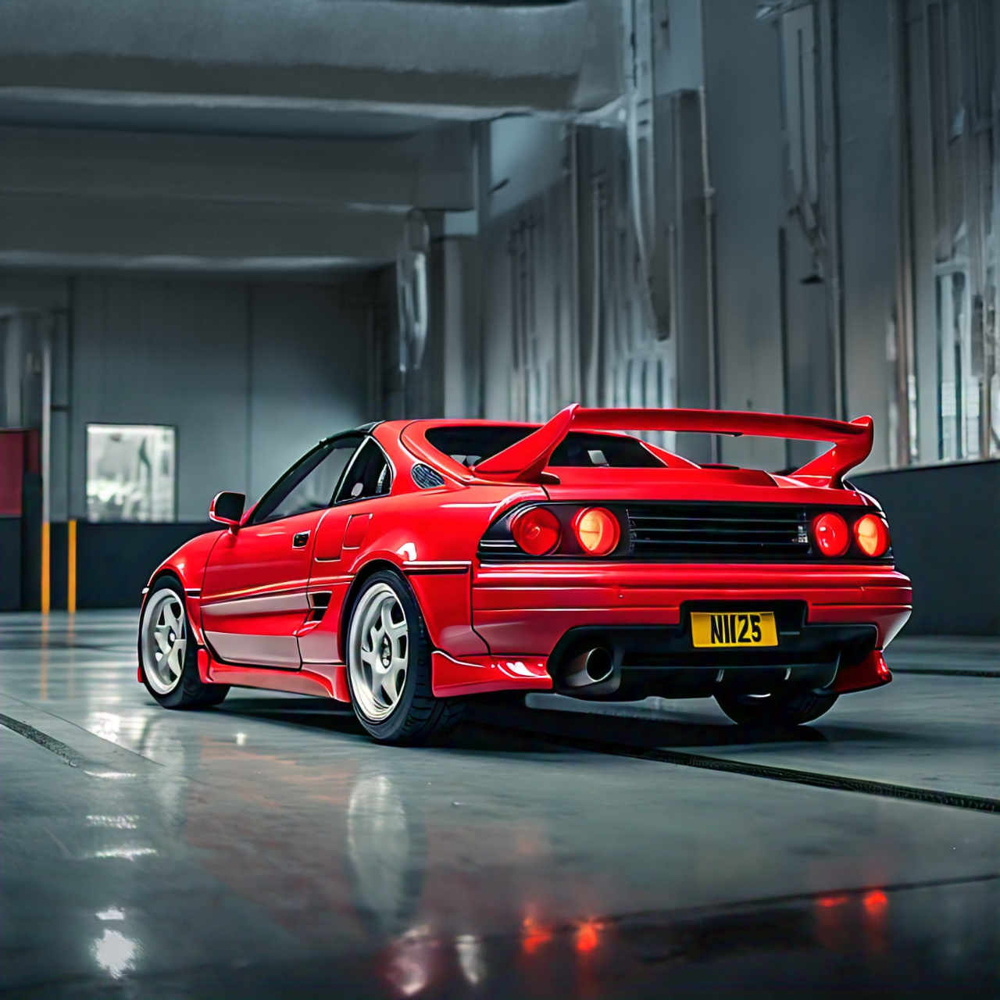

vestige
OVERVIEW:
The Vestige is a Japanese 90's inspired car. With 610 horsepower, produced with the help of two turbos, Epsilon has brought back the trending popup headlights. We have created a compact, 2 door car that screams the design of the 90's. A very high top speed of 305 km/h. Experience the thrilling boost of the turbos. Furthermore, enjoy the rolling anti lag system. Charge up the boost and witness a surge of acceleration as the car lurches forwards. A retro red and black interior transports you to the 90's. To top it all off, the modification potential on the Vestige is unlimited.
SPECIFICATIONS:
| Horse power | 610 hp |
|---|---|
| Torque | 710 Nm |
| Engine | v8 - Gallo24 |
| Induction | Twin Turbo |
| Weight | 1510kg |
| Top speed | 305 km/h |
| Red Line | 7500+ RPM |
| efficiency | 14L/100km |
COLOURS:
Purchase - $102,199